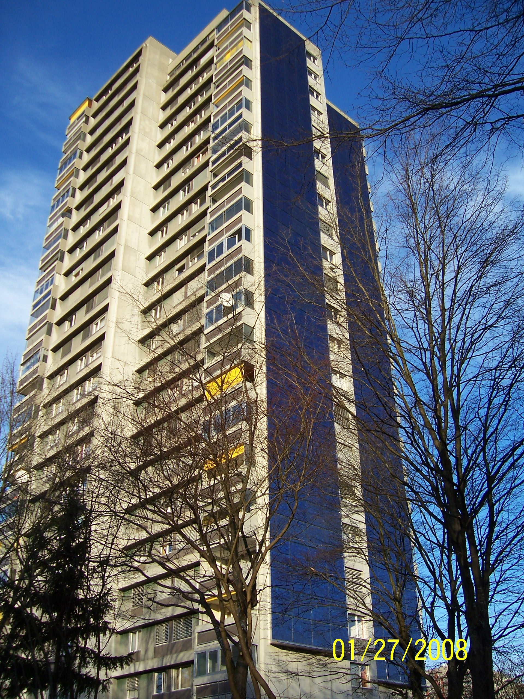

PATRI REALTY · PRÉVIA EDITORIAL · APURAÇÃO 22/10/2026 · NÃO PUBLICADO EM PRODUÇÃO
Sustentabilidade em condomínios: por onde começar
Um plano de sustentabilidade condominial começa por medição e responsabilidades. Veja como organizar prioridades em água, energia e resíduos sem promessas vagas.

Primeiro, saber de onde vêm os números
Nossa proposta é montar uma linha de base antes de anunciar uma meta. Reúna contas, leituras e registros de ocupação disponíveis. Separe áreas comuns de unidades privativas quando a medição permitir e documente mudanças de uso. Comparar meses com condições muito diferentes pode produzir uma impressão errada de melhora.
O plano deve dizer quem confere os dados e quem responde por desvios. Um vazamento corrigido ou uma configuração de iluminação revisada são entregas objetivas quando acompanhadas por registros. Não atribua a elas um percentual de economia sem medição que o sustente.
Energia: eficiência antes da escolha de um equipamento
No Brasil, o PBE Edifica disponibiliza informações e tabelas de eficiência energética de edificações. A ENCE é uma referência de avaliação dentro do seu escopo; não promete o valor da próxima fatura de um condomínio. O Ministério de Minas e Energia também reúne a orientação pública sobre eficiência em edifícios. [1][2]
Como sequência de análise, recomendamos verificar horários de uso, controles, iluminação, equipamentos e contratos. Só então compare investimentos maiores. Para geração solar, peça estudo de consumo, área disponível, sombreamento, conexão, orçamento e manutenção, com profissionais habilitados.
Água e resíduos precisam de operação
Reúso e aproveitamento de chuva são assuntos de projeto, qualidade da água, destinação e regras locais. A legislação federal de saneamento prevê condições para fontes alternativas em determinadas situações; isso não autoriza usar água de qualquer origem para qualquer finalidade. Consulte o serviço local e a equipe técnica. [3]
Para resíduos, um roteiro prático é mapear o que se gera, confirmar o destino contratado e tornar a separação compreensível para moradores e funcionários. Sacos e lixeiras sem coleta compatível não encerram o trabalho. Estas são recomendações de implementação, sem atribuir um resultado ambiental já medido.
Um roteiro de 90 dias para discussão
Dias 1 a 30: reunir documentos e consumos, inspecionar perdas e definir responsáveis. Dias 31 a 60: comparar propostas de intervenção e requisitos técnicos. Dias 61 a 90: executar o que estiver regularmente aprovado e acompanhar o resultado. Esse é um cronograma sugerido, ajustável à realidade do condomínio.
Apresente na assembleia as alternativas, os custos iniciais, os custos recorrentes e as incertezas. O objetivo é formar uma decisão verificável. Uma campanha de sustentabilidade fica mais confiável quando mostra também o que ainda não foi medido.
Perguntas frequentes
Todo condomínio é obrigado a instalar energia solar?
Não decorre das fontes desta pauta uma obrigação geral de instalação para todos os condomínios. Analise regras aplicáveis, viabilidade técnica e aprovação necessária no caso concreto.
A etiqueta energética garante conta menor?
Não. A conta depende também do uso, da ocupação, das tarifas e da operação dos sistemas.
Como anunciar uma redução de consumo?
Informe período, unidade de medida, área considerada e método de comparação. Sem base consistente, apresente a ação realizada e evite afirmar um resultado ainda não demonstrado.
Verbetes
- Linha de base
- Referência de consumo ou desempenho anterior à intervenção, com período e condições documentados.
- ENCE
- Etiqueta Nacional de Conservação de Energia; seu alcance depende do objeto e da metodologia avaliados.
- Reúso
- Uso de água previamente utilizada após tratamento e controle compatíveis com a finalidade autorizada.
Fontes consultadas
- Inmetro — tabelas de edificações
- MME — eficiência energética das edificações
- Lei 11.445/2007 — texto atualizado
Continue a leitura
- Bosco Verticale: o que avaliar em um empreendimento sustentável
- Gestão condominial de alto padrão: o luxo da previsibilidade
- BIM e inovação: o que deve chegar à operação do condomínio
Kit de publicação
- Título SEO
- Sustentabilidade em condomínios: plano prático
- Meta description
- Um plano de sustentabilidade condominial começa por medição e responsabilidades. Veja como organizar prioridades em água, energia e resíduos sem promessas vagas.
- Legenda social
- Sustentabilidade começa com uma pergunta: o que conseguimos medir? Organizamos um roteiro de água, energia e resíduos para o condomínio decidir com evidências, responsabilidades e uma conta completa.